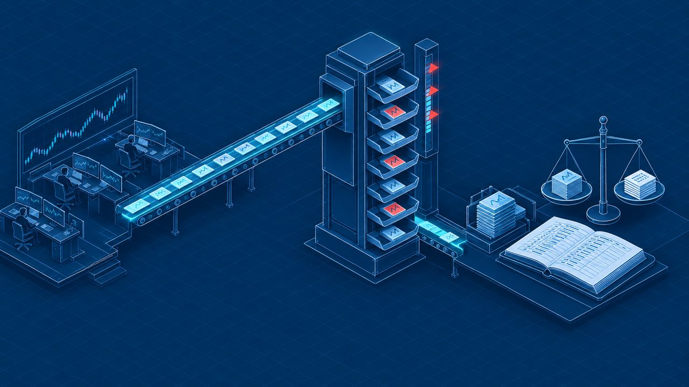

Data engineering
realtime-stock-market-pipeline

A real-time stock market analytics pipeline that ingests prices from Polygon.io and Alpha Vantage through Kafka and Spark Structured Streaming. It serves a Grafana dashboard with Z-score anomaly alerts and runs a daily batch reconciliation of stream against batch totals.
- Rolling 1min, 5min and 1hr OHLCV windows with Z-score anomaly detection on price and volume
- Daily Airflow reconciliation comparing stream and batch totals
- 12 unit tests passing across 3 test suites